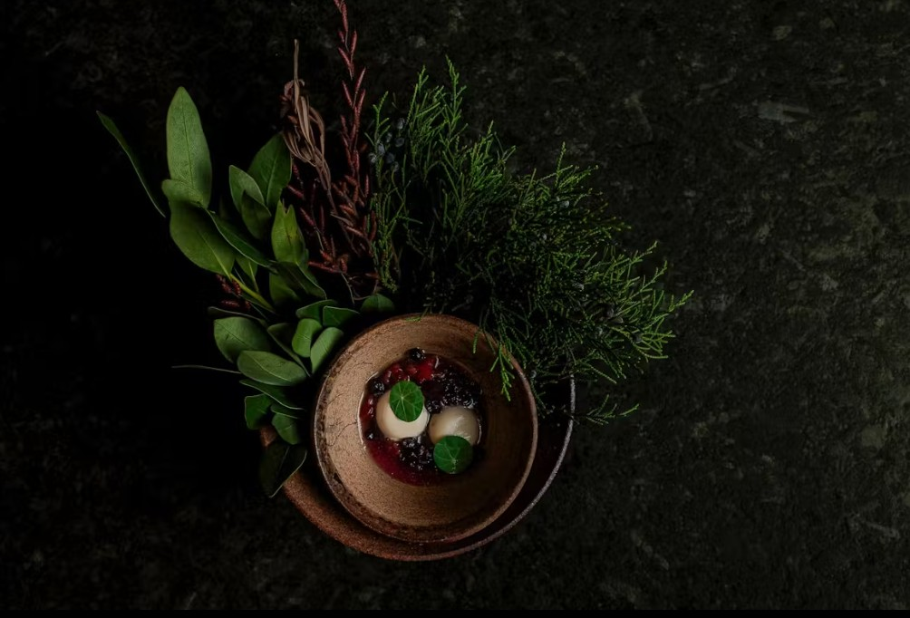

Antheia
Sixteen seats, one uncompromising tasting menu
Few restaurants in the country commit as fully to a single idea as Antheia. Chef Briana Kim's fermentation-driven tasting menu unfolds course by course around an open kitchen, drawing on koji, garums, and preserves that have often been developing for months. It's high-end dining stripped of anything unnecessary — nothing on the plate that hasn't earned its place.
For anyone seeking a genuinely special occasion meal that doubles as a conversation piece for weeks afterward, this is as fancy and considered as Ottawa's fine dining scene gets.
Reserve a Table →